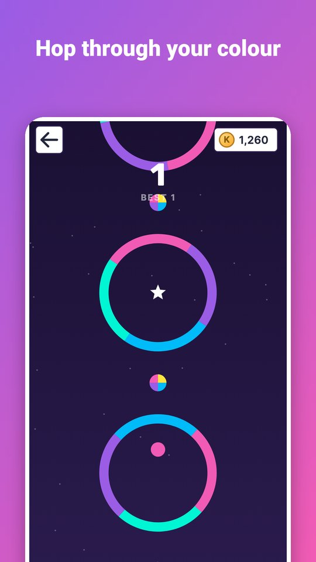
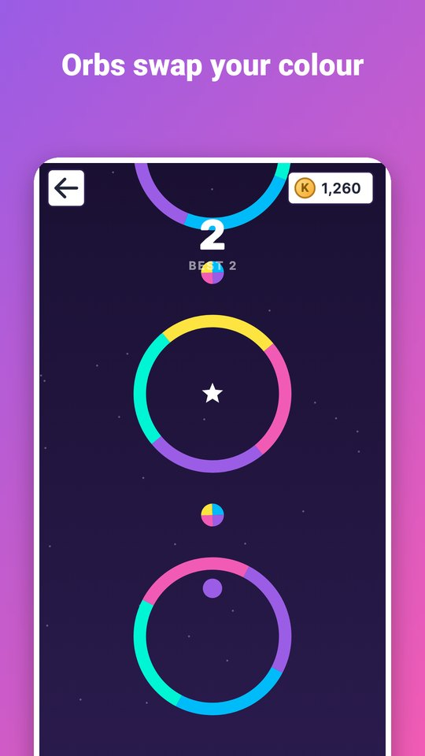
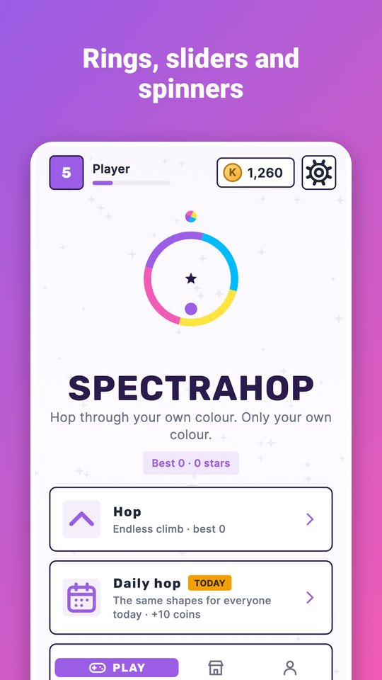
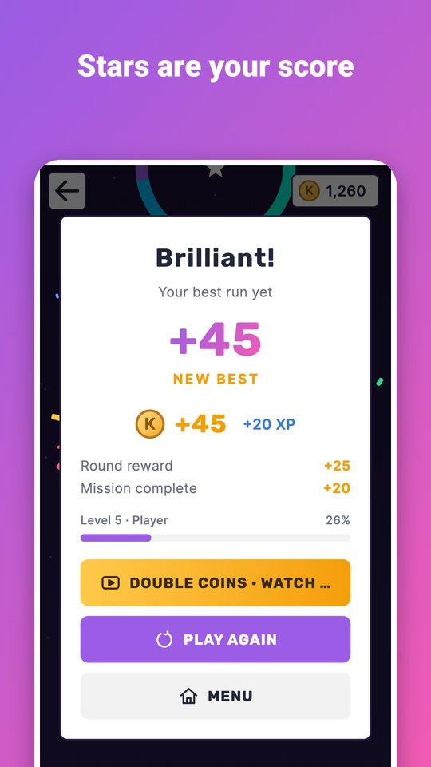
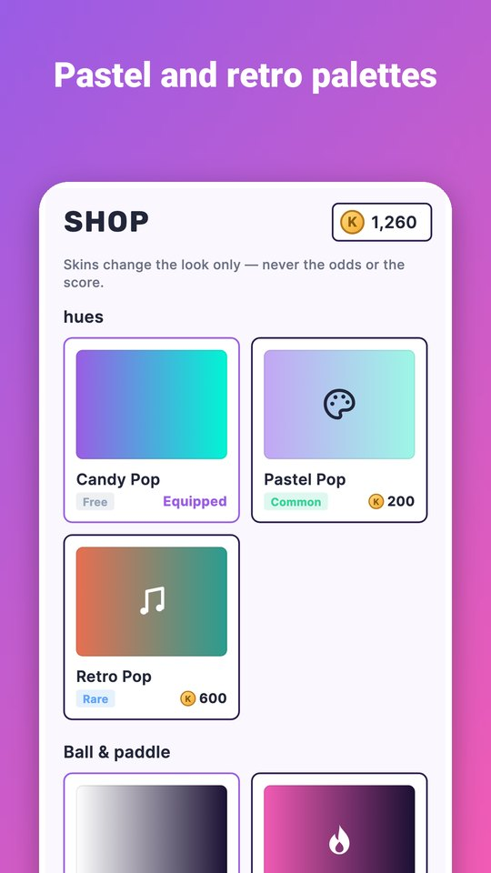

Spectrahop is a one-tap reflex game in candy colours. Tap to hop the ball upward — it falls between taps — and pass only through the parts that match its colour.
- Colour orbs swap your colour; stars are your score.
- Rings, sliders, spinners and squares that get faster as you climb.
- Daily hop: the same shapes for everyone, once a day.
- A shield passes one wrong colour; revive keeps your run going.
- Best scores, daily missions and achievements.
- Palettes and balls: Pastel Pop, Retro Pop and Comet Tail.